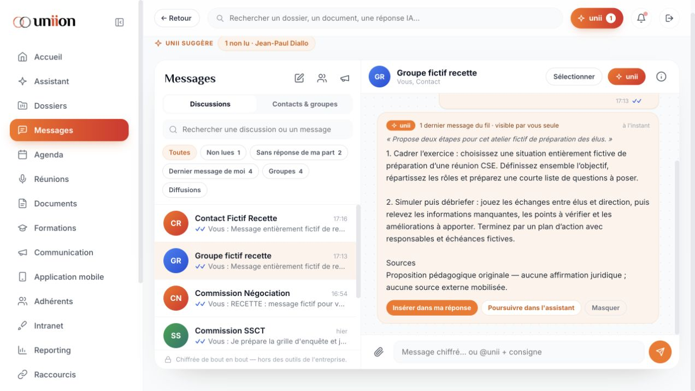

RECETTE APRÈS CORRECTIONS — 23 octobre 2026 PÉRIMÈTRE Corrections du prototype local, sans refonte graphique ni changement des routes. L’archive originale et sources/ sont inchangés. Sauvegarde avant corrections : corrections/avant/. Le serveur habituel a été relancé sur http://127.0.0.1:5050. Recharger la page pour charger les corrections et le nouveau jeton local. CORRECTIONS DES CONSTATS F01–F17 F01 : filtre de masquage étendu aux noms non prédéfinis, courriels, téléphones, matricules, identifiants sociaux et adresses ; application également à la frontière de l’appel IA (contexte et mémoire inclus). Les crochets ordinaires ne permettent pas de contourner le filtre. Limite : détection heuristique, pas garantie d’anonymisation exhaustive. F02 : un niveau RPS demandé manuellement ne redescend plus automatiquement au niveau standard. F03 : pages mobiles ajoutées à la sauvegarde locale ; création et rechargement vérifiés dans le navigateur. F04–F05 : suppression du conflit entre deux méthodes patchDossier ; modification du dossier et versement de message dans le dossier cible effectifs. F06 : séparation du moteur @unii de messagerie et de l’assistant global ; réponse réelle obtenue dans le groupe fictif. Une réponse différée reste liée au fil d’origine. F07 : contexte dossier enrichi de l’historique et des contenus de pièces réellement disponibles ; accueil du chat régénéré depuis le dossier courant. Aucun OCR ajouté : une pièce sans texte enregistré reste une métadonnée. F08 : signature alimentée par un instantané du document courant, y compris le document généré ; conservation locale de cet instantané. Signature toujours simulée, sans certification ni transmission externe. F09 : ordre du jour créé à partir des informations de l’événement sélectionné, dans l’éditeur existant. F10 : rattachement depuis le lecteur crée une pièce locale avec son contenu, puis ouvre le même écran Pièces jointes. F11 : séparation des contextes et des états d’ouverture des assistants global et messagerie ; suppression des méthodes concurrentes. F12 : recherche enrichie des documents et conversations créés localement ; ouverture de la conversation dans Assistant. F13 : génération réelle de fichiers XLSX, CSV et PDF ; format et nom cohérents, suppression de la fausse destination Paramètres → Exports. L’export est un instantané des données locales : les statistiques et périodes de reporting restent démonstratives, ce qui est précisé dans la fenêtre existante. F14 : téléchargement d’un PDF d’attestation locale, explicitement non certifiée. F15 : suggestions de réponses de sondage générées à partir de la question courante, validation du résultat et rejet des réponses devenues obsolètes. F16 : deux inférences simultanées et mise en attente des suivantes, à la place du rejet immédiat 429 ; trois requêtes réelles simultanées ont réussi. F17 : choix IA alignés sur Codex et son effort de raisonnement ; mentions principales de souveraineté, chiffrement, conservation et signature qualifiées pour la version locale. Les chapitres sécurité sont signalés comme spécifications cibles et non garanties effectives. Cela ne constitue pas une implémentation de ces protections. TESTS EXÉCUTÉS 1. 20 tests JavaScript de régression : tous réussis. Résultats dans tests-regression.txt ; script tests/regression.cjs. 2. 4 tests d’exports : tous réussis. XLSX relu avec openpyxl, PDF relu avec pypdf, CSV UTF-8 et neutralisation de formules vérifiés, format inconnu rejeté. Résultats dans tests-exports.txt. 3. Passerelle HTTP : origine étrangère refusée (403), trois formats téléchargeables, trois appels IA réels concurrents réussis. Script tests/bridge_test.py, jeux entièrement fictifs. 4. Navigateur : connexion démo ; export Excel ; sélection RPS conservée ; réponse réelle Assistant ; modification d’un dossier puis rechargement ; création de page mobile puis rechargement ; @unii réel dans le groupe fictif ; ouverture des 15 modules principaux. Captures textuelles dans ecrans/, réponse dans messagerie-ia.txt, capture messagerie-corrigee.png. Aucune erreur console relevée dans le journal consulté. 5. Comparaison avant/après : balises et attributs du template inchangés, blocs CSS identiques. Script tests/design_test.py, résultat verification-design.txt. Des textes explicatifs ont été corrigés dans leurs emplacements existants ; leur longueur peut modifier le retour à la ligne. Aucune nouvelle interaction ou route ajoutée. LIMITES DE VALIDATION Cette passe combine tests automatisés ciblés et parcours navigateur. Elle ne constitue pas une nouvelle exécution exhaustive de chaque variante des 87 sections du premier rapport. Les fonctionnalités corrigées de sondage, attestation, ordre du jour, signature, pièces et recherche sont couvertes principalement par tests du code ; toutes leurs variantes n’ont pas été rejouées manuellement. La dernière modification de texte de confidentialité n’a pas fait l’objet d’une nouvelle capture de chacun des écrans ; structure et syntaxe ont été revérifiées après cette modification. Pas de validation physique smartphone/tablette, d’enregistrement réel du microphone, de paiement, d’envoi externe, ni de signature certifiée. La recette conserve ses données fictives sur le port 5051 ; elle n’a pas injecté ces données dans l’instance habituelle 5050. CE QUI RESTE UN PROTOTYPE Authentification, rôles et organisations de démonstration, données locales dans le navigateur, statistiques et plusieurs services externes simulés. Aucune migration Supabase, aucune publication OVH ni certification de sécurité réalisée. Un vrai backend d’autorisation, le stockage, les intégrations externes, les politiques de conservation et la validation de sécurité restent nécessaires avant production. L’IA fonctionne via Codex connecté au compte ChatGPT local. Ce raccordement ne remplace pas une intégration de production multi-utilisateur. Les réponses et sources générées doivent être vérifiées ; le corpus du prototype n’est pas une base juridique validée.
